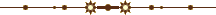

<H1, H2, ..., H6
atributos>...</H1, H2, ..., H6>
São disponíveis seis
níveis de cabeçalhos formando uma hierarquia descendente em tamanho.
Podem conter: texto; todos os elementos de formatação de caracteres;
<A>, <IMG>, <BR>, etc.
Utilizado dentro de: <BODY>, <FORM>, <BLOCKQUOTE>,
<CENTER>, <DIV>
Atributos:
ALIGN="center", "left", "right"
ou "justify"
Alinha o cabeçalho no centro, à esquerda (padrão), à direita ou pelas duas margens,
respectivamente.
Exemplos:
CABEÇALHO COM TAMANHO H1
CABEÇALHO COM TAMANHO H2
CABEÇALHO COM TAMANHO H3
CABEÇALHO COM TAMANHO H4
CABEÇALHO COM TAMANHO H5
CABEÇALHO COM TAMANHO H6
Os comandos de cabeçalho incluem uma linha antes e outra depois. Como pode
ver no exemplo acima as tags <H1, H2, H3, H4, H5, H6>
apresentam apenas 6 tamanhos de cabeçalho sendo o <H1> o
maior tamanho. Para conseguir tamanhos maiores utilizamos os recursos da folha de estilo que
irei mostrar a seguir:
STYLE="propriedades"
Altera a apresentação do cabeçalho (cor, fonte, tamanho, sublinhado, estilo)
de acordo com uma lista de propriedades de estilo. Por exemplo:
Sintaxe:
<CENTER>
<h3 STYLE="color: navy; font-family: Helvetica, Sans-serif;
font-SIZE: 50pt">Conclusão</h3>
</CENTER>
|
Conclusão
Formatou a palavra "Conclusão" em azul marinho, fonte
Helvetica ou, na ausência desta, a fonte Sans-serif,
com 50pt de tamanho.
<P atributos> ... </P>
P (Paragraph) - Parágrafo.
Usado para separar blocos de texto (geralmente com o espaço de uma linha entre eles). O descritor de fechamento
</P> é opcional.
Pode conter: texto; todos os elementos de formatação de caracteres; <A>, <IMG>, <BR>
Utilizado dentro de: <BODY>, <FORM>, <BLOCKQUOTE>,
<CENTER>, <LI>, <DD>, <DIV>
Atributos:
O comando <P> inicia um novo parágrafo onde o texto é
automaticamente alinhado pela margem esquerda da tela. Através do parâmetro
ALIGN, pode-se mudar o alinhamento.
ALIGN="center",
alinhamento pelo centro; "left" - alinhamento pela esquerda,
(default),"right" - alinhamento pela direita ou
"justify" (justificado) - alinha o texto pelas duas margens. O modo justificado
permite dar ao parágrafo uma aparência mais profissional e organizada, já que os textos ficam
alinhados de maneira uniforme entre as margens esquerda e direita. O parágrafo abaixo, em
itálico, é um exemplo de um texto ajustado com este comando.
<P ALIGN="justify">O nosso sertanejo é muito supersticioso...
O nosso sertanejo é muito supersticioso, daí os arrepios de muitos quando ouviram,
esta madrugada, um lobo que passou uivando bem perto do acampamento. Há uma lenda no sertão,
em que muitos crêem: "Quem quiser conquistar o que quer que seja, basta olhar a coisa desejada
através do olho do lobo" É coisa certa; não há como fugir!
STYLE="propriedades"
Formata o parágrafo (cor, fonte, tamanho, sublinhado, estilo) de acordo com uma lista de propriedades
de estilo. Por exemplo:
<P STYLE="color:006400; font-family: verdana, sans-serif;
font-STYLE: italic; font-SIZE: 11pt">O nosso sertanejo...
|
O nosso sertanejo é muito supersticioso, daí os arrepios de muitos quando ouviram,
esta madrugada, um lobo que passou uivando bem perto do acampamento. Há uma lenda no sertão,
em que muitos crêem: "Quem quiser conquistar o que quer que seja, basta olhar a coisa desejada
através do olho do lobo" É coisa certa; não há como fugir!
Formatou o parágrafo na cor verde escuro 006400, fonte
Verdana ou, na ausência dessa, a fonte
Sans-serif em itálico com tamanho
11pt. Mais detalhes na seção Folhas de Estilo.
No exemplo acima estou formatando apenas um parágrafo, os demais manterão a
configuração padrão (conforme pode ver). Mas vamos supor que eu queira tornar essa configuração
como formato padrão em minha homepage, então terei que colocar a sintaxe abaixo entre as tags
<HEAD>...</HEAD> da minha página HTML.
<STYLE TYPE="text/css">
<!- P { color: #006400; font-family: verdana, sans-serif; font-STYLE: italic; font-SIZE: 11pt; } ->
</STYLE>
|
Agora todos os parágrafos terão essa formatação.
LINHAS HORIZONTAIS <HR atributos>
Horizontal Rule -
Régua horizontal, usada como divisor de texto.
Utilizado dentro de: <BODY>, <FORM>, <BLOCKQUOTE>,
<PRE>, <CENTER>, <DIV>
Atributos Opcionais:
SIZE="número"
Onde número indica a espessura da linha em pixels. Exemplos:
<HR SIZE="2">
<HR SIZE="4">
<HR SIZE="7">
<HR SIZE="15">
WIDTH="número"
Define a largura da linha: número pode ser um valor absoluto em pixels ou uma percentagem
em relação a largura da página (seguido de %). Exemplos em %:
<HR WIDTH="20%">
<HR WIDTH="40%">
<HR WIDTH="80%">
Exemplos em pixels:
<HR WIDTH="20">
<HR WIDTH="40">
<HR WIDTH="80">
ALIGN="left", "center"
ou "right"
A linha, se tiver largura menor que a página (usando WIDTH) pode ser alinhada
pela margem esquerda, pelo centro ou pela margem direita, respectivamente. Exemplos:
<HR WIDTH="30%" ALIGN="left">
<HR WIDTH="50%" ALIGN="right">
NOSHADE
Especifica uma linha horizontal sólida, sem sombreamento (o default é a sombreada). Exemplos:
<HR NOSHADE SIZE="3">
<HR NOSHADE SIZE="5">
<HR NOSHADE SIZE="8">
 NOTA: O browser Opera não reconhece o atributo NOSHADE.
NOTA: O browser Opera não reconhece o atributo NOSHADE.
COLOR="#rrggbb"
ou "nome"
Determina uma cor para a linha. O default é o cinza, exemplos:
<HR NOSHADE SIZE="3" color="red">
<HR NOSHADE SIZE="5" color="#00ff00">
<HR NOSHADE SIZE="8" color="#00ccff">
NOTA: Os browsers Netscape & Opera não reconhecem o atributo color.
LINHAS VERTICAIS
Na verdade não existe
uma tag que cria uma linha vertical, assim como criamos a linha horizontal, o que existe são
alguns macetes que substitui esse comando. Vou apresentar dois recursos HTML para criar essas linhas:
PRIMEIRO RECURSO:
Se pegarmos o comando <HR> (régua horizontal) e configurar
seus atributos WIDTH para uma largura muito pequena e
SIZE para uma altura muito grande temos uma linha vertical, exemplos:
<HR WIDTH="2" SIZE="50">
|
<HR WIDTH="2" SIZE="75">
|
<HR WIDTH="2" SIZE="100">
|
Um problema com esse recurso é que ele não funciona para linhas verticais
maiores que SIZE="100", ou seja, sua linha terá no máximo um
tamanho igual ao exemplo da direita.
SEGUNDO RECURSO:
Agora vou aplicar o mesmo princípio (de afinar largura e alongar altura) em uma tabela, só que
aqui os atributos de configuração serão BORDER, CELLPADDING, CELLSPACING
e HEIGHT. As linhas verticais criadas com <TABLE> não têm limite de tamanho,
exemplos:
Uma demonstração prática da aplicação de linha vertical encontra-se em Colunas
de texto e também em Gráficos em barras Agora vou acrescentar cor e espessura.
<TABLE BORDER CELLPADDING="0"
CELLSPACING="0" HEIGHT="200"
BGCOLOR="#006600">
<TR><TD></TD></TR></TABLE>
|
<TABLE BORDER CELLPADDING="1"
CELLSPACING="1" HEIGHT="300"
BGCOLOR="#ff2400">
<TR><TD></TD></TR></TABLE>
|
<TABLE BORDER CELLPADDING="1"
CELLSPACING="2" HEIGHT="400"
BGCOLOR="#0000c9">
<TR><TD></TD></TR></TABLE>
|
Os exemplos acima criam linhas verticais livres, isso é, desvinculada com qualquer objeto,
mas podemos utilizar a tag <TABLE> (tabela) para criar
linhas vinculadas a objetos. Nos exemplos a seguir o texto irá determinar o comprimento
da linha.
<TABLE CELLPADDING=0><TR>
<TD WIDTH="1" BGCOLOR="#000000">
</TD><TD WIDTH="100"><CENTER>
Aqui está um exemplo de um texto
com uma linha preta e fina a sua esquerda.
</CENTER></TD> </TR></TABLE>
|
|
|
Aqui está um exemplo de um texto com uma linha preta e fina a sua esquerda.
|
|
<TABLE CELLPADDING=0><TR>
<TD WIDTH="100"><CENTER>
Outro exemplo de um texto com
uma linha verde e grossa a sua direita.
</CENTER></TD>
<TD WIDTH="7" BGCOLOR="#008000">
</TD></TR></TABLE>
|
|
Outro exemplo de um texto com uma linha verde e grossa a sua direita.
|
|
|
<TABLE CELLPADDING=0><TR>
<TD WIDTH="3" BGCOLOR="#FF0000">
<TD WIDTH="100"><CENTER>
E finalmente um texto com linhas
vermelhas dos dois lados.
</CENTER></TD>
<TD WIDTH="3" BGCOLOR="#FF0000">
</TD></TR></TABLE>
|
|
E finalmente um texto com linhas vermelhas dos dois lados.
|
|
|
Repare que para alterar a posição direita/esquerda da linha basta alterar
a posição da "célula-linha" (em negrito) para antes ou depois do texto. Para alterar cor e espessura das
linhas basta configurar os atributos WIDTH e BGCOLOR
da célula. Para aprender mais sobre linhas verticais em tabela vá para
[Bordas com FRAME & RULES]
OUTROS SEPARADORES DE TEXTO
O comando de inserção de
imagens também pode ser usado como separador de texto, etc... Existem muitos arquivos gif ou jpeg
criados exclusivamente para isso. Para inserir um arquivo de imagem usamos o comando
<IMG SRC="arquivo.ext">.
<CENTER><IMG SRC="imagens/shambar2.gif"></CENTER>
<CENTER><IMG SRC="imagens/linha.gif"></CENTER>

<CENTER><IMG SRC="imagens/vizinhanca.gif"></CENTER>

<CENTER><IMG SRC="imagens/mabelT.gif"></CENTER>

<CENTER><IMG SRC="imagens/wink-bar.gif"></CENTER>
Os parâmetros WIDTH=número e HEIGHT=número
que altera a largura e altura da imagem pode causar alguns efeitos interessantes:
<IMG SRC="imagens/barani09.gif" WIDTH=200>
<IMG SRC="imagens/barani03.gif" WIDTH=400>
<IMG SRC="imagens/barani01.gif" WIDTH=600>

<IMG SRC="imagens/bowline.gif" WIDTH=700 HEIGHT=20>

TEXTO PRÉ-FORMATADO <PRE atributos> ... </PRE>
PRE (Preformatted Text) -
Se você digitar em uma fonte HTML vários espaços em branco entre duas palavras, de nada
adiantará, o browser só reconhecerá um. Uma das formas de resolver o problema é usando os
tags <PRE>...</PRE>. O texto que estiver
dentro deste elemento preservará a formatação original (o browser
interpretará os espaços, retornos e tabulações). O texto
pré-formatado é exibido em uma fonte de espaçamento fixo, como Courier.
Pode conter: texto, elementos de formatação de caracteres, <A>, <BR>, <HR>
Utilizado dentro de: <BODY>, <FORM>, <BLOCKQUOTE>,
<DD>, <LI>
Atributos:
WIDTH="..."
Opcional. Informa a largura em colunas.
Exemplo: Note que as próximas linhas possuem uma fonte de tamanho fixo:
O Texto Livre
Através do Ele possibilita a apresentação
comando PRE
posso posicionar
o texto em qualquer
lugar da tela do texto conforme
está inserido
no código fonte.
|
NOTA: O browser Opera configura o texto entre <PRE>
... </PRE> para uma caixa maior. No exemplo acima, quem estiver com este browser verá o
texto como algo semelhante a caixa="4".
NON BREAKING SPACE - ESPAÇAMENTO FORÇADO
Ainda que o webmaster
adicione dez espaços com a tecla [space] em seu código fonte, o browser irá considerar
apenas um espaço. Isso é muito chato quando descobrimos que o texto teima em não ficar no lugar indicado
de uma coluna. Uma forma de impor espaçamentos forçados é o conjunto de caracteres
(non-breaking space). Repita 3 vezes essa
seqüência e você terá três espaços seguidos. Esta seria outra maneira de se adicionar
espaços entre as letras de um texto livre (sem a formatação de uma tabela). Exemplos:
| SINTAXE |
|
RESULTADO |
<P>1000,00<BR>
903,00<BR>
  21,00<BR>
   0,23 |
|
1000,00
903,00
21,00
0,23 |
Também posso usar o mesmo artifício para o salto de linhas usando <p>
aumentando o espaçamento vertical entre cada parágrafo. No exemplo abaixo coloquei
três linhas entre a primeira e a segunda frase.
|
Nada mudou. A noite chuvosa. Só mudou o calendário, que aliás nunca tivemos.
O sertão dispensa o compromisso com o calendário, que inibe a criatura, que escraviza,
que nos empurra e nos refreia...
Hoje, domingo, a primeira hasteação da bandeira do novo ano foi feita com uma
chuvinha impertinente. Dissemos aos trabalhadores que o dia de hoje era em homenagem
a todos os povos do mundo. Era o dia de confraternização dos povos.
|
<Q atributo> ... </Q>
Tem a função
similar ao comando BLOCKQUOTE, mas é usado para citações curtas.
Atributo Principal
CITE=URL
Especifica a fonte da citação.
Exemplo: <Q CITE=url> texto...</Q>:
ENDENAÇÃO <BLOCKQUOTE> ... </BLOCKQUOTE>
Utilizado para
destacar um bloco de texto aumentando a espessura de suas margens.
Pode conter: listas, cabeçalhos, separadores, blocos, formulários,
tabelas
Utilizado dentro de: <BODY>, <FORM>, <DD>,
<LI>, <BLOCKQUOTE>, <PRE>
Observe o deslocamento das margens dir/esq. do segundo parágrafo que foi
ajustado com o parâmetro:
<BLOCKQUOTE> Realizamos hoje...</BLOCKQUOTE>
|
Estamos chegando ao fim do veranico. Hoje, 3 de fevereiro, amanheceu nublado. O rádio funcionou.
Aproveitamos a chance para endereçar ao Coronel, no Rio, o seguinte rádio:
Realizamos hoje exploração aérea rio Ferro VG conforme combinado coronel PT
Horário tarde enviaremos notícias sobre assunto PT Substituição Miguel consultamos possibilidade
vinda primeiro condução trabalhador José Valadão motivo diversos serviços andamento campo VG
serragem VG lavragem madeira PT Temos homem fora serviço braço deslocado PT Os Villas Bôas PT
|
Outro exemplo da aplicação desta tag está em Usando figuras como marcadores.
<ADDRESS> ... </ADDRESS>
Bloco de texto
destacado. Utilizado para endereços e para assinar o documento.
Pode conter: texto, elementos de formatação de caracteres,
<IMG>, <BR>
Utilizado dentro de: <BODY>, <FORM>, <BLOCKQUOTE>
Sintaxe:
<ADDRESS>
Eloy Dorival Aurélio
edaurelio@ig.com.br
São Paulo - SP - Brasil
</ADDRESS>
|
|
Eloy Dorival Aurélio
edaurelio@ig.com.br
São Paulo - SP - Brasil
|
<DIV
atributos> ... </DIV>
Divide a página em
blocos que podem ser alterados de acordo com características
comuns.
Pode conter: blocos, texto, <A>, <IMG>, <BR>
Utilizado dentro de: <BODY>, <FORM>,
<BLOCKQUOTE>, <PRE>
Atributos:
ALIGN="center", "left"
ou "right"
Alinha todo o bloco de acordo com a posição.
STYLE="propriedades"
Altera a apresentação do conteúdo do bloco (cor, fonte, tamanho, sublinhado, estilo, espaçamento) de
acordo com uma lista de propriedades de estilo.
Por exemplo:
sintaxe
<DIV STYLE="color: 005500;
font-family: Comic Sans MS;
font-SIZE: 12pt;
line-HEIGHT: 14pt">
Formata este parágrafo em...
</DIV>
|
Formata este parágrafo em verde lodo, fonte Comic Sans MS 12pt ou qualquer outra
fonte sem serifa, se Comic Sans não estiver disponível com espaçamentos
entre linhas de 14pt.
Outros exemplos de aplicação desta tag estão em:
Bordas.
Filtro DropShadow.
Filtro Glow.
Fonte Tridimencional.
Linhas Tracejadas.
Posicionamento de Objetos.
<CENTER> ... </CENTER>
Alinha um bloco de
texto, cabeçalho, tabela ou imagem no centro da página.
Pode conter: blocos
Utilizado dentro de: <BODY>, <FORM>, <BLOCKQUOTE>, <PRE>
Exemplos:
<CENTER><h1>O BRASIL</h1></CENTER>
O BRASIL
<CENTER><IMG SRC="imagens/cacto.gif"></CENTER>
<ACRONYM
atributos> ... </ACRONYM>
Esta tag indica que o conteúdo
envolvido por ela é um acrônimo (uma abreviação formada pelas letras (ou grupo de letras) iniciais de uma
frase.)
TITLE - Este atributo apresenta a forma
DESABREVIADA do acrônimo, tornando desnecessária a utilização de textos explicativos sobre a
abreviação (geralmente apresentada entre parênteses). Exemplo:
<P>O <ACRONYM TITLE="Dynamic HyperText Markup Language">DHTML</ACRONYM> é a principal
linguagem dos webmaster para criar websites.
Agora posicione o ponteiro do mouse sobre o acrônimo DHTML da frase abaixo.
O DHTML é a principal
linguagem dos webmaster para criar websites.
Apareceu uma janelinha explicando o que é DHTML. Mas qual o número de caracteres que poderei colocar
dentro dessa janelinha? Fiz um teste com 100, 200 e 400 caracteres e conclui que o número deve variar de
browser para browser. O IEv6.0 aceita mais de 400 caracteres, já o Mozilla Firefox v0.9.2 apenas
67 caracteres.
100 caracteres
200 caracteres
400 caracteres
Porém existe um outro detalhe - a janelinha fica aberta apenas
por volta de 5 segundos, se o ACRONYM tiver muitos caracteres fará com que o internauta tenha que abri-la diversas vezes
para terminar sua leitura e isso não seria muito prático...